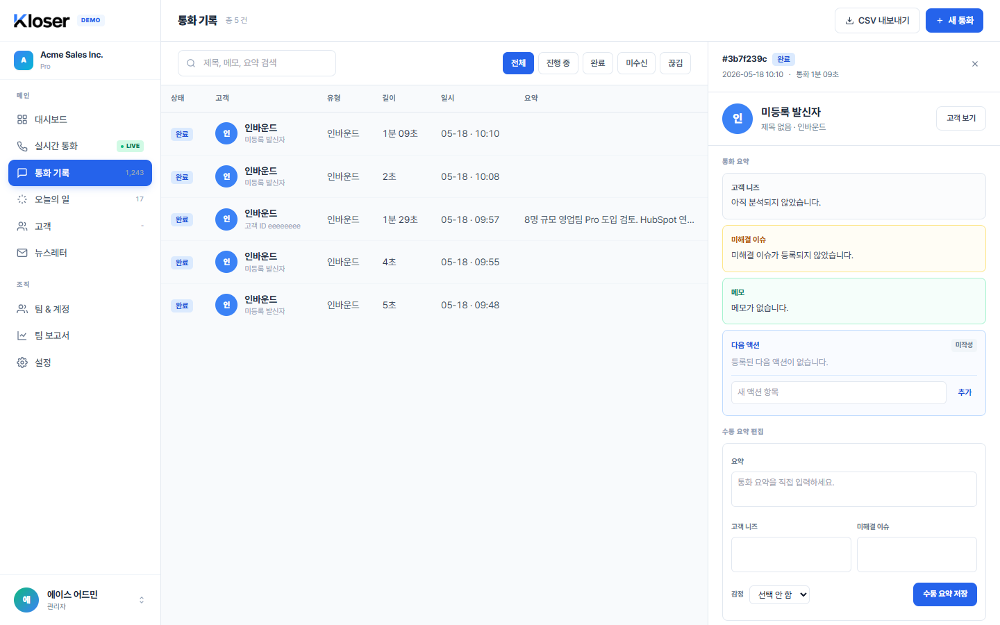
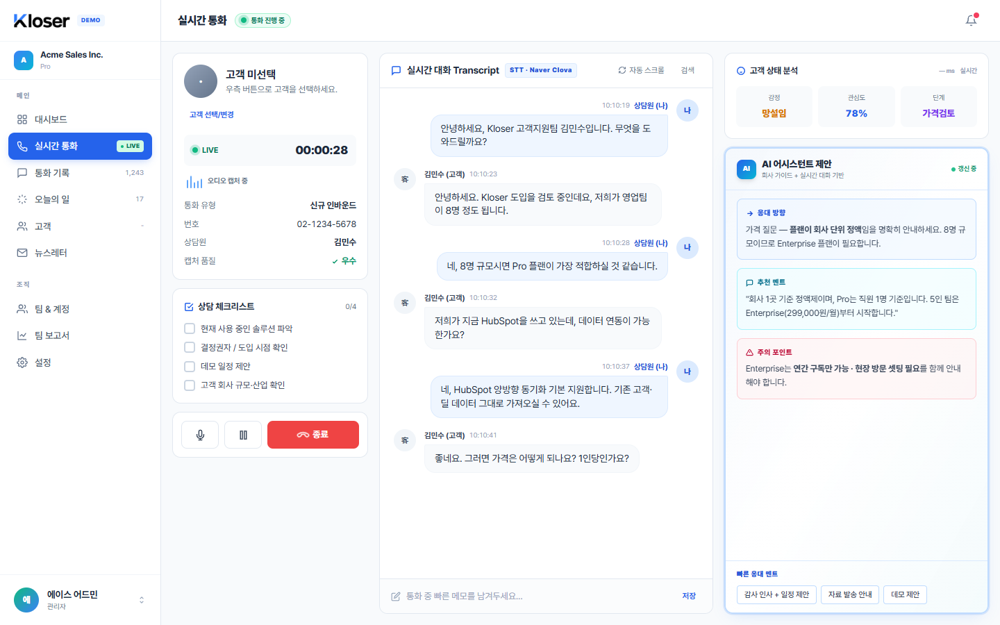
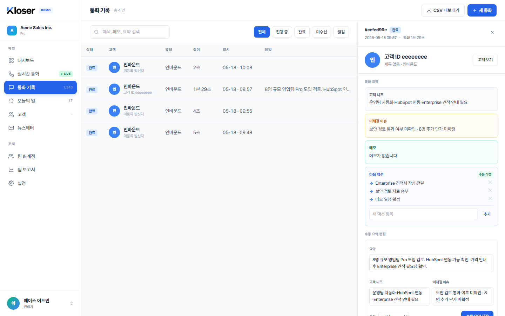
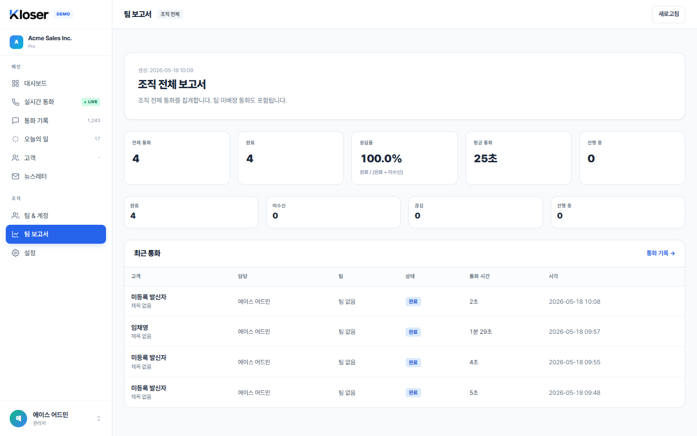

기능 01 · 통화 기록 화면
통화 후 AI 자동 요약 — 종료 버튼 한 번이면 끝
Phase 5까지는 통화가 끝나면 사람이 직접 요약 칸을 채워야 했습니다. Phase 6부터는 통화 종료 버튼을 누르는 순간 백그라운드에서 AI가 대화 내용을 읽고 요약·고객 니즈·미해결 이슈를 자동으로 채워 둡니다. 잠시 뒤 통화 기록을 열면 빈자리가 알아서 메워져 있습니다.

자동 요약이 만들어지는 흐름
상담원이 통화 종료 버튼을 누릅니다. 통화 자체는 그 즉시 마감되어 통화 기록에 "완료"로 보입니다 (Phase 4 흐름 그대로).
백그라운드 AI 작업이 한 건 등록됩니다. 사용자는 이걸 기다릴 필요 없이 다음 통화로 넘어가도 됩니다.
AI가 대화 내용을 읽고 요약·니즈·이슈·감정을 채워 둡니다. 잠시 뒤 통화 기록 상세를 열면 빈자리가 메워져 있습니다.
사람이 적은 메모는 보호됩니다
상담원이 통화 중 또는 통화 후에 직접 적어 둔 요약은 AI가 절대 덮어쓰지 않습니다. 비어 있던 통화에만 자동으로 채워집니다 — "내가 쓴 정리"가 사라질 걱정이 없습니다.
자동화가 잠시 멈춰도 통화는 끝납니다
백그라운드 자동화가 잠시 멈춰 있어도 통화 자체는 정상 종료됩니다. 자동화가 다시 살아나면 그 시점부터 밀린 통화도 차례대로 채워 줍니다.
기능 02 · 배경에서 동작
끊긴 통화 자동 정리 — "진행 중"으로 영원히 남지 않습니다
Phase 5에서 통화는 살아 있음 신호를 주기적으로 보냈습니다. 하지만 브라우저가 꺼졌을 때 그 통화를 자동으로 끊김 처리해 주는 장치는 없었습니다. Phase 6부터는 백그라운드가 주기적으로 신호가 끊긴 통화를 모아서, 1분 이상 무응답인 진행 중 통화를 자동으로 "끊김" 상태로 마감합니다.
예시 — 14:23에 시작된 통화가 도중에 끊긴 경우
정상 종료가 우선
사용자가 종료 버튼으로 정상 마감한 통화는 그대로 "완료"로 남습니다. 자동 정리가 정상 종료를 "끊김"으로 덮어쓸 가능성은 없습니다.
중간까지의 데이터는 보존
끊긴 통화도 끊기기 전까지 들어간 대화·메모·체크리스트 결과는 그대로 보존됩니다. 상태만 "끊김"으로 바뀝니다.
진행 중 KPI가 자연스럽게 정리
대시보드·보고서의 "진행 중" 통화 수가 더 이상 부풀려지지 않습니다. 실제로 진행 중인 통화만 그 숫자에 잡힙니다.
기능 03 · 실시간 통화 화면
실시간 AI 응대 추천 — 통화 중 카드, 통화 후 이력
통화 중에 고객의 말이 흘러가는 동안, 화면 우측의 AI 어시스턴트 제안 패널이 응대 방향·추천 멘트·주의 사항을 카드 형태로 띄워 줍니다. Phase 6부터는 이 추천 카드가 화면에만 잠깐 떴다가 사라지지 않고, 그 통화의 추천 이력으로 같이 저장됩니다 — 통화가 끝난 뒤 통화 기록 상세 패널에서 같은 추천을 다시 볼 수 있습니다.

3종 카드가 한 세트로 뜸
응대 방향(어떤 방향으로 응대할지) · 추천 멘트(그대로 말할 수 있는 문장) · 주의 사항(놓치면 안 되는 정보) — 이 3가지가 같은 시점에 한 세트로 갱신됩니다.
통화가 끝나도 이력으로 남음
추천이 떴다가 다음 추천으로 갱신되어도, 이전 추천은 그 통화의 추천 이력에 저장됩니다. 통화 기록 상세에서 "통화 중 어떤 추천이 떴고 무엇을 썼는지" 그대로 다시 확인할 수 있습니다.
기능 04 · 통화 기록 화면
다음 액션 삭제 — ✕ 한 번이면 깔끔
Phase 5에서는 다음 액션을 만들고 완료 표시까지만 가능했고, 잘못 만든 항목을 지울 수 없었습니다. Phase 6부터는 통화 기록 상세 패널의 다음 액션 영역에 각 행 오른쪽 끝의 ✕ 버튼이 추가되어, 누르는 즉시 그 항목이 사라집니다.

즉시 삭제 · 전체 새로고침 없음
✕를 누르면 그 행만 화면에서 사라집니다. 다른 항목·메모·요약은 그대로 유지되고, 통화 본문 전체가 다시 로딩되지 않습니다.
삭제 권한은 통화 변경 권한과 동일
관리자 / 매니저(같은 팀) / 상담원(본인 통화)는 삭제할 수 있고, 조회 권한은 ✕가 동작하지 않습니다 — 통화 변경 권한과 같은 규칙을 따릅니다.
완전 삭제 — 복구 불가
현재는 삭제하면 완전히 사라집니다. "잘못 삭제 시 복구"는 다음 단계(Phase 7+) 감사 로그가 들어올 때 함께 다뤄집니다.
기능 05 · 보고서 화면 (신규)
매니저 팀 보고서 — 우리 팀만 따로 모아 보기
사이드바 "조직" 영역에 "팀 보고서" 메뉴가 새로 들어왔습니다. 매니저로 로그인하면 우리 팀 통화만 모은 KPI 6장과 최근 통화 10건이 한 화면에 보이고, 관리자는 같은 페이지에서 조직 전체 또는 다른 팀을 선택해 볼 수 있습니다.

누가, 어디까지 볼 수 있나
현재 단계에서는 사이드바 "팀 보고서" 메뉴가 모든 역할에게 보입니다. 상담원·조회 권한이 눌러도 페이지가 안 열리지만, 메뉴 자체를 숨기는 정리는 다음 단계(Phase 7+)에서 닫힙니다.
KPI 6장
전체 통화 / 완료 / 미수신 / 끊김 / 진행 중 / 응답률(완료 ÷ (완료 + 미수신)) — 통화 운영을 한 화면에서 진단할 수 있는 6가지 숫자.
평균 통화 시간
완료된 통화의 평균 통화 시간이 별도 카드로 보입니다. 통화가 한 건도 완료된 게 없으면 "—"로 표시됩니다.
최근 통화 10건 표
고객 / 상담원 / 팀 / 상태 / 통화 시간 / 시작 시각이 표로 정리되어 보이고, 우측의 "통화 기록" 링크로 전체 기록 페이지로 바로 이동할 수 있습니다.
보너스 · 배경에서 동작
실제 AI 서비스 연결 — 시뮬레이션이 끝납니다
Phase 5까지의 음성 인식·AI 요약·문서 검색은 모두 결과가 미리 정해진 시뮬레이션이었습니다. Phase 6부터는 운영 환경에서 실제 외부 AI 서비스를 끼워 쓸 수 있습니다 — 한국어 통화 인식, Anthropic Claude 기반 응대 추천·요약, OpenAI 임베딩 기반 가이드 검색까지 모두 진짜 서비스로 동작합니다.
자리에 끼워지는 외부 서비스
설정이 없거나 시뮬레이션 모드로 두면 기존처럼 미리 정해진 응답이 그대로 동작합니다. 운영 모드로 키를 등록해야 실제 서비스가 호출됩니다.
키가 없으면 즉시 실패 — 조용한 시뮬레이션 대체 없음
"실제 서비스 쓰겠다"고 설정해 두고 키가 빠져 있으면 서버가 시작 시점에 즉시 멈춥니다. 운영자가 모르는 사이에 시뮬레이션으로 슬쩍 바뀌는 일은 없습니다.
호출 한 건마다 사용량이 자동 집계
요약·추천·검색·음성 인식 한 번당 어느 서비스를 얼마나 썼는지(토큰·소요 시간)가 자동으로 기록됩니다. 운영자가 사용량을 한눈에 확인할 수 있습니다.
우리 회사 호출만 보임
사용량 기록은 회사 단위로 분리되어 있습니다. 같은 시스템을 쓰는 다른 회사의 사용량은 절대 섞이지 않습니다.
비용 자동 한도는 다음 단계
현재 단계에서는 사용량만 기록합니다. "일일 비용 한도 / 폭주 자동 차단" 같은 안전 장치는 다음 단계(Phase 7+)에서 들어옵니다.
화면 단위 정리
화면별 — 어디까지 진짜로 동작하나
Phase 6 시점에서 각 화면이 어디까지 실제 데이터로 움직이는지 정리했습니다. "다음" 표시는 이 단계에서는 아직 비어 있고 다음 Phase 7부터 닫힐 영역입니다.
다음 실제 마이크 입력 인식 (현재는 가짜 발화 흐름)
다음 잘못 삭제한 다음 액션 복구 (감사 로그 도입 후)
다음 단계
Phase 7 — 운영 출시 직전의 보안·운영 장치
Phase 6은 운영 자동화 4가지를 닫은 단계입니다. Phase 7은 그 위에 실제 외부 사용자에게 출시하기 전 꼭 필요한 보안·운영 장치를 채웁니다.
실제 이메일 발송
회원가입 인증·비밀번호 재설정·동료 초대 이메일이 실제 메일 서비스로 발송됩니다. 현재 단계에서는 개발용 임시 저장소에 보관됩니다.
2단계 인증 (MFA)
관리자 계정은 비밀번호 외에 1회용 코드를 한 번 더 입력해야 로그인됩니다. 관리자 계정 탈취가 곧 조직 데이터 노출이기 때문에 운영 출시 전에 닫혀야 합니다.
감사 로그
누가 언제 어떤 권한 변경·삭제·보고서 조회를 했는지 기록되어, 운영자가 사후 추적할 수 있게 됩니다. Phase 6에서 비워 둔 "잘못 삭제한 다음 액션 복구" 자리도 이 로그 위에서 닫힙니다.
개인정보 보존 정책 자동 실행
"통화 내용 3년 보관 후 삭제" 같은 정책을 백그라운드가 자동으로 실행합니다. 문서상 약속만 있던 정책이 코드로 강제됩니다.
AI 비용 자동 추적
Phase 6에서 사용량만 쌓아 두던 자리에 "실제 비용 환산 + 일일 한도 + 폭주 차단"이 들어옵니다.
역할별 메뉴 가시성 정리
상담원·조회 권한 사용자에게 "팀 보고서" 같은 관리자 메뉴가 사이드바에서 깔끔히 숨겨집니다.
이전 단계가 궁금하면 Phase 1 / Phase 2 / Phase 3 / Phase 4 / Phase 5 가이드를 참고하세요.